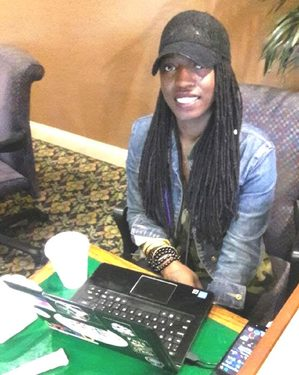
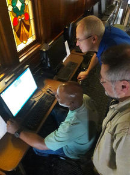

From Rock Bottom to Rock Solid
Nick understands what “hitting rock bottom” is all about. An addiction to drugs had left him homeless, penniless, hopeless, and estranged from his family. Wandering into an AA meeting in hopes of bumming a cigarette, one of the attendees made a phone call to Wayside Christian Mission. Today, Nick has a year of sobriety under his belt and the confidence to forge a new life. Besides learning how to live without drugs and alcohol, Nick said the program, “taught me self-confidence and brought out talents and skills that I never knew I had.” Nick is grateful for a future that is brimming with promise. By God’s grace and your financial support, men and women just like Nick are getting a second chance at life.

From the Streets to the Classroom: Love Beverly’s Story
Within fifteen minutes of enrolling in college, Love Beverly lost her home. When she arrived at Wayside Christian Mission, she told her case manager that she would earn a degree no matter the costs. She was placed in the Mission’s College and Career Program where, for the next two years, she took classes at Jefferson Community and Technical College. That was four years ago. This month, Love Beverly will graduate with a B.S. in Political Science. She also holds down a full time job and is raising her two children. Her next stop is law school. When asked what she would like to say to our donors, she answered, “Thank you for your generosity! I do not know what I would have done without the resources provided by Wayside Christian Mission.” Your prayers and generosity make happy endings possible.

"I'm clean and sober! Now what do I do?"
When our resident clients complete the program, they face new set of challenges. Finding employment is a competitive job market is one such challenge. Many of our clients have checkered employment histories and, indeed, some have never held a full-time job. Michael Finfrock and Randy Riblet lead a weekly vocational training class for our men in recovery each Monday evening. Resume writing, job interviewing skills, workplace etiquette, customer conflict resolution, and communication skills are just a few of the many wide-ranging topics covered each week. These are tools that help our resident clients find work. Our two volunteer vocational teachers play a vital role in the ongoing success of the men in our program.